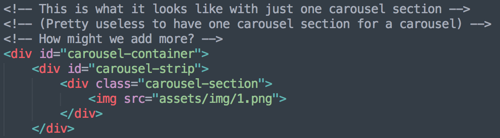

Today, we'll be working with jQuery to make our finsta more dynamic. We'll be implementing a lightbox and carousel, which allows users to view a larger version of multiple images!
Your final product should be something like this:
Part 1: Carousel HTML
The carousel's HTML structure contains of a few parts: the carousel container, the carousel strip, and the carousel sections. Here's how they're broken up:
- The carousel container contains the viewable portion of the carousel, and is the parent div to the carousel strip. It should be a mask for its children -- that means, if its children happen be a greater size than its width or height, the parts that overflow will be hidden (in CSS, this means overflow: hidden)
- There are multiple carousel sections, one for each of the different views the carousel container can show
- The carousel strip is made up of all the sections lined up horizontally, and is nested inside the carousel container
To move the carousel, we move the left or right css attributes of the carousel strip so that the next or previous carousel section on the carousel strip is visible.
To put things in motion, see the video below. We've removed the overflow:hidden property of the carousel container to make the movement of the carousel strip more clear. The box with the red border is the carousel container, the blue border is the carousel strip, and each of the carousel sections has a black border.
MAKE SURE YOU HAVE A CLEAR UNDERSTANDING OF THE STRUCTURE OF THE CAROUSEL BEFORE TRYING TO IMPLEMENT IT IN HTML.
Place your carousel code in starter_file.html between the left and right divs. Give your carousel container an id of carousel-container, your carousel strip an id of carousel-strip, and each section a class of carousel-section. You should have 9 carousel sections, and each one should have a nested image tag that corresponds to the images in the grid.
Hint: If you're struggling, click on me! We highly encourage you tackling this on your own first, though.

Part 2: Some CSS
We've given you some of the carousel styling to position the carousel, but if you open starter_file.html, it won't look like a carousel until we add in some more styling. Here's what you have to do:
- Give the carousel container a height and width of 450px.
- Set the carousel container's overflow property to hidden
- Make the carousel strip have absolute positioning, and set its left property
- Which image do you think this sets the carousel to start at?
- We want the images in the carousel to be stacked horizontally: to do this, give the carousel strip flex display.
- Give the carousel section class a height and width of 450px and relative positioning.
- Give the image inside the carousel section to have a width of 450 pixels
Your carousel should now look like static image with two nonfunctional arrows on the side! Yay 🎊
Part 3: JavaScript Magic!
Let's make this functional and dynamic! Let's look at what we've defined for you so far:
- A constant variable
distanceToNextImage, which is -450. The reason why it's -450 is because each picture is 450px wide, so we need to move 450px in some direction to get to the next image. The reason why it is negative is because to move to the next image (clicking on the right arrow), we need to reduce the "left" property to be more negative, dragging the strip more to the left so that the next image on the right shows. - A variable
currentImageNumber, which is set to 0, which corresponds to the first image. Notice how each of the grid images in the HTML has an id that represents its image number (NOT thesrcattribute of the image). This keeps track of which image our carousel should display. - We also included code to close the lightbox when pressing the overlay or the x. We recommend looking at that when you have time!
Alright, let's get started!
- When the user clicks on the right arrow, we should increase the
currentImageNumberby one. Then, we should set theleftproperty of the carousel strip tocurrentImageNumber * distanceToNextImagepixels.
How does this multiplication of numbers set the left property to the appropriate value? Think about this! - Similarly, when the user clicks on the left arrow, we should change
currentImageNumber; however, this time, we should decrease it by 1, since we're moving to the left image. Then, change theleftproperty of the carousel strip in a similar manner to the right arrow.
Why can we use the same line of code to set the CSS for both the left and right arrows, even though they're moving in opposite directions? - Our carousel should now work! However, the lightbox shouldn't be the first thing showing when you open up the page. In the beginning of your file, right after the variables we have defined for you, select the lightbox and use jQuery's
.hide()method to hide the lightbox. - Add code such that when the user clicks on an item, the lightbox appears (use the opposite of
.hide()!) - Notice that when the lightbox appears, it always starts on the image that you last left it off on (or the first image, if it's the first time you loaded the page). Ideally, we should have the image correspond to the item you just clicked on. To do this, in your
clickmethod for the item, right before the line where you show the lightbox, do the following:- Get the id of the item you clicked on, then use
parseIntto turn it from a string with "px" at the end to just the number in the front. This should be the current image number -- set the appropriate variable to that number!
To turn a string (with"px"or some other thing added to the end) into a number, useparseInt. For example,let twelve = parseInt("12px", 10)will store the number12in the variabletwelve. - Use the same multiplication logic from the left and right arrows to set the
leftcss property of the carousel strip.
- Get the id of the item you clicked on, then use
Great! THAT'S IT! You've got a carousel up and running! Feel free to get checked off now! If you have free time, however, feel free to fix some things (see below!)
Part 4 [Optional]: BUGS! FIXES!
You might notice that this carousel comes with some bugs. For example, if you click past the first and last image, we just get into some weird gray matter. This is because we have moved the carousel strip to a left value that's beyond the see-able range of the carousel container, and so the gray is just the color of the carousel container background.
To fix this, when updating the currentImageNumber after clicking left or right, we will use the modulo % symbol. You use it just like any of the other arithmetic operators +, -, /, * but it essentially gives you the remainder of dividing the first number with the second number.
Thus, modulo your new currentImageNumber with SOME other number such that the new number should never be greater than 8 (since that is the largest currentImageNumber, which starts at 0).
Hint: When getting a remainder, notice that the remainder will never be larger than the number you used to divide (the denominator, essentially). So if you do n / x, the remainder will be within the range [0, x-1].
Great! What you'll notice now is that the right button will zoom to the first image once you get past the last image, but the left one still errors. This is because Javascript's modulo handles negative numbers with a negative result (If you want to read more, the % is actually just remainder, not modulo. Real modulo should always return a positive number in the range given in the hint. See here.)
To fix this, you can look ahead in the class (we'll be covering this on Monday!) and read about conditional statements, letting you set currentImageNumber to a different value in the case it hits a negative number, or you can just use this piece of code that includes shorthand syntax for conditional statements:
currentImageNumber = currentImageNumber == 0
? 8
: (currentImageNumber - 1);It checks if current image number is 0, and if it is, then it sets the new number to 8; if it isn't, then it decreases it by one as usual.
AND THAT'S THE END OF THE FINSTAGRAM SERIES. WE HOPE YOU ENJOYED IT.
Submission
No need to submit anything :)